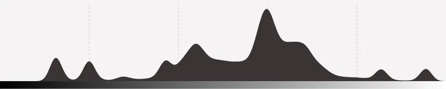
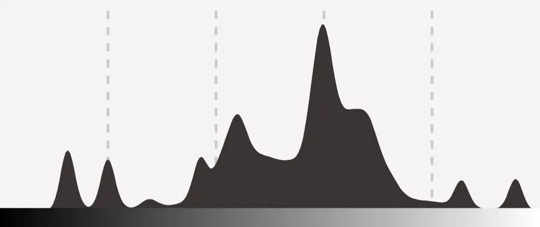
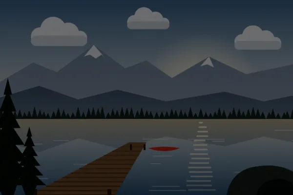
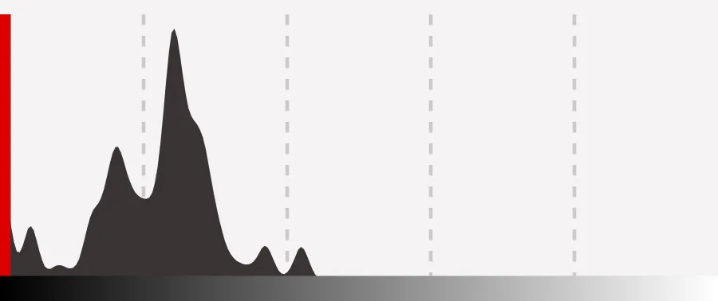
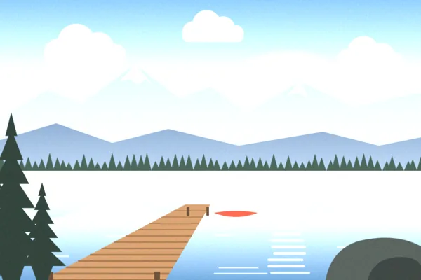
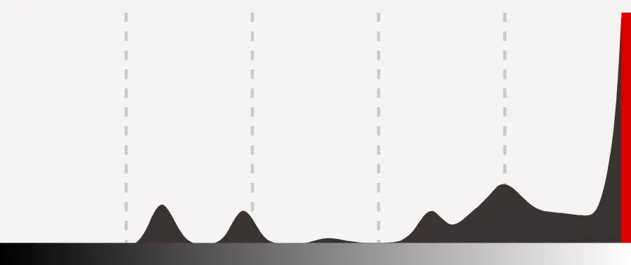
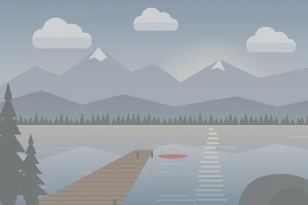
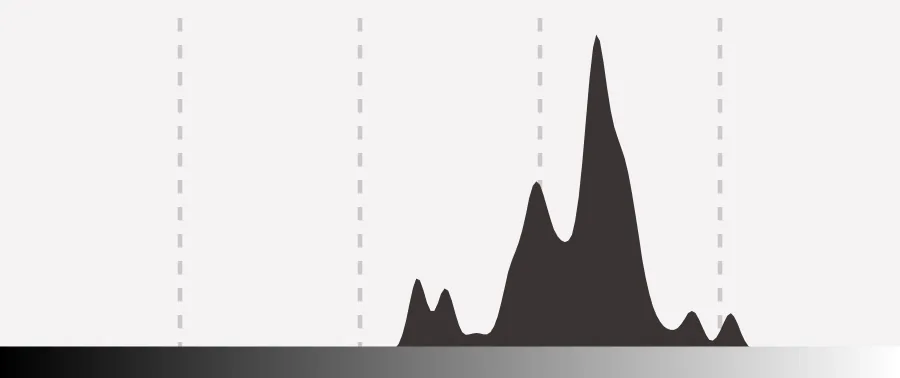

The screen on the back of a camera is a poor judge of exposure. In bright sun it looks too dark. In a dim room it looks too bright, and it may not match your computer at all. The histogram is far more reliable. It’s a graph of how bright every pixel in the picture is, and once you can read it you’ll know straight away whether you’ve lost detail.
How to read it

The horizontal axis runs from pure black on the left to pure white on the right. The height of the graph at each point shows how many pixels have that brightness. A tall peak in the middle means lots of midtones, and a long, low tail on the right means a few bright highlights. It tells you nothing about where those pixels are in the picture. Only how many of each tone there are.
Photographers split the range into five zones. Blacks sit at the far left. They’re the deepest tones, where detail disappears. Shadows are dark areas that still show texture. Midtones hold most of a typical scene, things like grass and skin. Highlights are bright areas with detail left in them, and Whites, at the far right, are the brightest tones, where detail disappears again. Most editing programs use the same names for their tone sliders, so learning them pays off twice.
Clipping, and why the edges matter
If the graph is pressed against either edge, some pixels were recorded as pure black or pure white. That’s called clipping. Those pixels hold no detail at all, and no amount of editing will bring it back. A little clipping is fine, in the sun itself or a sparkle on water. Big clipped areas in a face or a cloudy sky usually aren’t.
Clipped shadows are a bit more forgiving than clipped highlights. Modern sensors keep a lot of information in dark areas, and lifting shadows in editing is far easier than rescuing burnt-out whites. That’s why many photographers expose to protect the highlights and brighten everything else later.
What the shape tells you


Balanced
Tones spread across the whole range and nothing piles up at either edge. Shadows keep their texture and highlights keep their detail. A typical, evenly lit scene, exposed correctly.


Underexposed
Most of the data is crowded on the left and the darkest areas are clipped to black. The picture looks dark and muddy, and brightening it later adds noise. Add light with positive exposure compensation or a slower shutter. A wider aperture or a higher ISO works too.


Overexposed
The data piles up against the right edge. The sky has gone pure white and that detail is gone for good. Use negative exposure compensation or a faster shutter speed, then check the histogram again.


Low contrast
A narrow hump with gaps at both ends, so nothing is truly dark or truly bright. Fog and flat overcast light make this shape. It can look lovely and moody. If it doesn’t, add contrast in editing by pulling the black and white points in towards the data.
There’s no perfect shape
A correctly exposed photo of snow should have most of its data on the right. A night street should have most of it on the left. So judge the histogram against the scene in front of you, not against some ideal hill in the middle, and ask whether you’ve lost any detail you actually care about.
Expose to protect the highlights
Lost highlight detail can’t be rescued, so a common approach is to make the exposure as bright as you can without clipping anything important. The data sits towards the right of the histogram but stops short of the edge. People call this exposing to the right. You get cleaner shadows, because brightening dark areas in editing adds noise and darkening bright areas doesn’t. Keep an eye on the highlight warning. If the bright areas that matter start to flash, take away a third or two-thirds of a stop.
The histogram in editing
Editing programs show the same graph, and their main tone sliders act on the same five zones. Moving the Whites slider right stretches the data towards the right edge. Moving Blacks left anchors the darkest tones. Many programs can show clipped areas in colour while you drag. Watch the graph as you edit, not just the picture, because even a good screen can hide a clipped sky.
Colour channels
Many cameras can also show separate histograms for the red, green and blue channels. The overall graph can look perfectly fine while one colour is clipped. It happens a lot with red flowers and stage lighting, where a single channel runs into the right edge long before the others. When that happens the colour loses its texture and turns into a flat patch. Taking away a third of a stop usually brings the detail back.
When a scene is too contrasty
Some scenes hold a wider range of brightness than the sensor can record. A sunny window seen from inside a dark room is a typical example, and so is a portrait lit from behind. The histogram shows it straight away, with data pressed against both edges at once. No single exposure can fix that.
You’ve got a few ways out. Protect the highlights and let the shadows go black, which can look dramatic. Add light to the shadows with a reflector or a flash. Wait for a cloud, or for the softer light of evening. Or take several exposures and blend them later, which many cameras and phones do automatically in their HDR mode. Which one you pick depends on what matters most in the picture.
Exercises
Exercises H1–H4. Tick each one off when you’ve tried it. Your ticks stay on this phone or computer.
- H1
Predict, then look
Turn on the histogram. Before you look at each picture, read the histogram and guess how the photo will look. Then check whether you were right.
- H2
Bracket a scene
Shoot one scene at −2, −1, 0, +1 and +2 EV. Compare the five histograms and note the step where clipping starts on each side.
- H3
Snow and night
Make a correct-looking exposure of a very bright scene and of a very dark one. The histograms lean right and left, and that’s exactly how they should look.
- H4
Chase the blinkies
Turn on the highlight warning and photograph a bright sky above a dark foreground. Lower the exposure a third of a stop at a time until the flashing stops. Note how much you had to take away.
Photography Handbook, © 2026 Samskara Photo Club. Text and illustrations are licensed under CC BY-NC-SA 4.0. You may share and adapt them for non-commercial use if you credit the club and share your version under the same licence. Commercial use needs the club’s permission. The club logo is not covered by the licence.